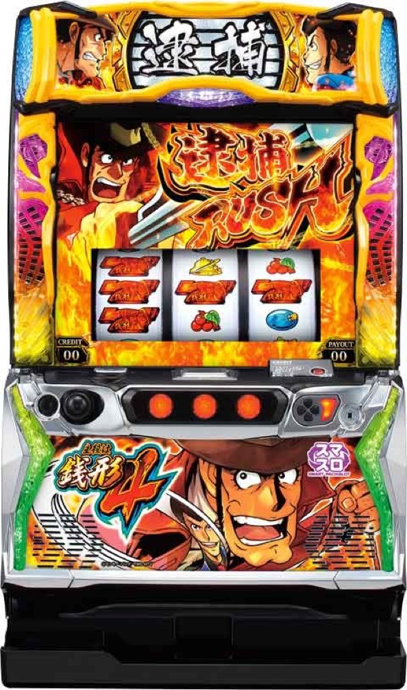

L主役は銭形4
規定ガッツ到達から50G＋αの逮捕RUSHへ。デカチャンス、BIG GAME、30G連を突破して超逮捕RUSHを狙う。
- 導入
- 2023年5月
- メーカー
- オリンピア
- 分類
- パチスロ
主要スペック
通常時のガッツ獲得、ゼニガダッシュ、50G＋αの逮捕RUSH、デカチャンス、BIG GAME、ゼニロボ起動から30G連、超逮捕RUSHまでを専用画面で体験できます。
- AT初当りは設定1約1/367.9〜設定6約1/305.8
- 逮捕RUSHは50G＋α・純増約2.7枚/G
- BIG GAMEは10Gメイン＋3G連チャレンジ
- 超逮捕RUSHは10Gオープニング＋30G・期待枚数2000枚超
L主役は銭形4の見どころと計算条件
通常時のガッツ獲得、ゼニガダッシュ、50G＋αの逮捕RUSH、デカチャンス、BIG GAME、ゼニロボ起動から30G連、超逮捕RUSHまでを専用画面で体験できます。
主役は銭形4を数字で早分かり
規定ガッツ、50G＋αの逮捕RUSH、直乗せ、デカチャンス、BIG GAME、30G連、超逮捕RUSHを機種専用で記録します。
30秒で分かる主役は銭形4
規定ガッツから50G＋αの逮捕RUSHへ入り、デカチャンスとBIG GAMEでゲーム数を伸ばし、30G連突破から最強特化ゾーンを狙うゲーム数管理型です。
こんな遊び方に向いている
- デカチャンスの相手と報酬をPUSHで開きたい
- 残りゲーム数と後乗せを見ながらATを進めたい
- 30G連から超逮捕RUSHまで挑戦したい
遊ぶ前に確認したいこと
- AT初当り、主要ゲーム数、純増、公開抽選値は実機解析値
- ゲーム数上乗せと獲得枚数を分けて表示
- 未公表の細かな振り分けは体験用代表値
規定ガッツから逮捕RUSHへ
通常時は毎ゲーム獲得するガッツを積み上げ、規定ガッツ到達からATへ。ゼニガダッシュは6G／1セットで、平均約90ガッツの獲得契機です。天井は通常時999Gまたは1399ガッツです。
シミュレーターでは設定別のAT初当り確率を使い、通常回転後に規定ガッツ到達を表示。最後のPUSHで50G＋αの逮捕RUSHへ進みます。通常モード、規定ガッツ、ゼニガタイムなどの細かな内部抽選はAT初当り確率へまとめています。
50G＋αの逮捕RUSH
逮捕RUSHは純増約2.7枚/Gのゲーム数管理型AT。レア役・デカ目でゲーム数上乗せとデカチャンスを同時に抽選し、規定ゲーム数到達からもデカチャンスへ発展します。
強チェリー・中段チェリー・デカ目はゲーム数上乗せ濃厚。専用進行では残りゲーム数を10Gずつ減らし、直乗せとデカチャンスを別々のPUSHで表示します。
デカチャンス
デカチャンスは選ばれたキャラクターで成功期待度と恩恵が変化。不二子は成功期待度約67.2%、ルパン一味は成功かつBIG GAME濃厚、ゼニロボ起動は30G連への契機です。
成功時はゲーム数上乗せが濃厚で、約36%でBIG GAMEへ。赤アイコン成功時はBIG GAME期待度50%、紫アイコンは不二子・ゼニロボ・ルパン宇宙ステージのいずれかが濃厚です。専用画面では相手・成功・報酬をPUSH後に開きます。
BIG GAME
BIG GAMEは10Gのメインパートと3G連チャレンジを行き来する上乗せ特化ゾーンです。突入時に継続ストックを1個持つため単発終了はなく、継続率は33%または64%。10セット目の上乗せは3桁濃厚です。
継続時はゼニガ逮捕アイコンを獲得し、終了時に後乗せを告知。シミュレーターでは各セットのPUSHで継続と+20〜300Gを表示し、ゲーム数上乗せと獲得枚数を混ぜません。
30G連と超逮捕RUSH
ゼニロボ起動やエンディング後などから30G連へ。30G間は金7（約1/64.0）、デカ目、中段チェリーで成功濃厚。弱チェリー・ベル・チャンスリプレイは3.5%、強チェリーは40.0%で成功を抽選します。
成功後は10Gのオープニングを経て30Gの超逮捕RUSHへ。超逮捕RUSHは上乗せ・デカ目・デカチャンスのトリプル高確率で、期待枚数は2000枚超。専用進行では30Gを回して最後のPUSH、成功後はオープニングと本編を分けて表示します。
固定条件と簡略化する範囲
- 約32G/50枚・1,000円46枚貸し・5.2枚交換で固定
- 設定1〜6のAT初当り・出玉率は公開設定別値を使用
- 逮捕RUSH、直乗せ、デカチャンス、BIG GAME、30G連、超逮捕RUSHを機種専用進行
- デカチャンスの一部キャラ選択率、AT中の各契機選択率など未公表部分は体験用代表値
- 19,000枚到達時はコンプリート表示
平均Gと投資目安の計算
掲載する逮捕RUSH初当り約1/367.9は設定1基準です。当サイトでは50枚あたり32G、1,000円46枚貸しの固定条件から、設定1基準の平均投資目安を約12,500円と計算します。
シミュレーターでは設定1〜6を均等抽選します。設定1〜6で公開されている初当り値を個別に使います。公開されていない特化ゾーン・上位到達率の設定差は加えません。 換金は5.2枚交換で固定し、結果とランキングに設定を表示します。
シミュレーション結果の見方
当るまで規定ガッツ到達・逮捕RUSHまでのゲーム数
設定設定1・2・3・4・5・6から抽選された今回の設定
上位到達30G連と超逮捕RUSHへの到達
最終収支差枚と5.2枚交換の収支目安
結果は自動で「マイ記録」に保存され、同じ機種を何回試したか、最高収支、勝率をあとから確認できます。
簡易シミュレーターについて
規定ガッツ到達・逮捕RUSH・超逮捕RUSHの流れを固定条件で体験できます。JavaScriptを有効にすると、この位置にシミュレーター、演出、マイ記録、機種別ランキングが表示されます。
結果は娯楽・確率理解のための参考表示です。金銭的価値や交換価値はなく、実際の勝敗や収支を保証しません。18歳未満の方の利用はお控えください。
主役は銭形4のよくある質問
主役は銭形4はどんな台？
通常時のガッツ獲得、ゼニガダッシュ、50G＋αの逮捕RUSH、デカチャンス、BIG GAME、ゼニロボ起動から30G連、超逮捕RUSHまでを専用画面で体験できます。 AT初当りは設定1約1/367.9〜設定6約1/305.8が主な確認ポイントです。
主役は銭形4の平均投資目安は？
設定1基準の逮捕RUSH初当り約1/367.9と、50枚あたり32G・46枚貸しの固定条件から、平均12,500円を目安として表示します。実際の設定や遊技状況で結果は変わります。
設定とゲームの流れはどう抽選する？
開始時に設定1・2・3・4・5・6から1つを均等抽選し、規定ガッツ到達、逮捕RUSH、30G連、超逮捕RUSHの順で到達を判定します。設定は最終結果とランキングに表示します。
収支はどう計算する？
1,000円46枚貸し・5.2枚交換の固定条件で投資、換金、収支目安を計算します。実店舗の再プレイ、持ちメダル、端数処理は含みません。